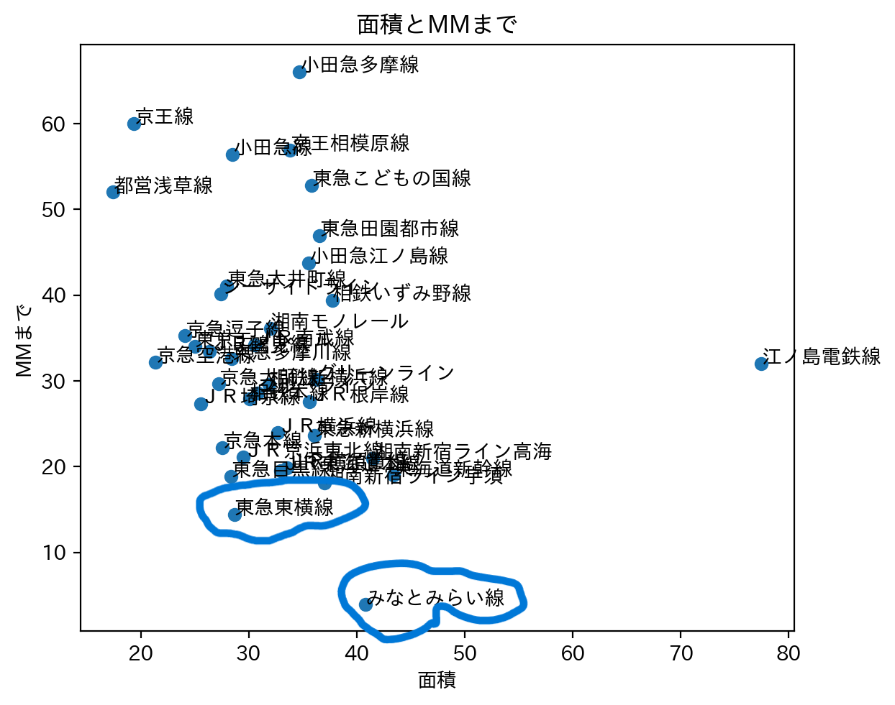
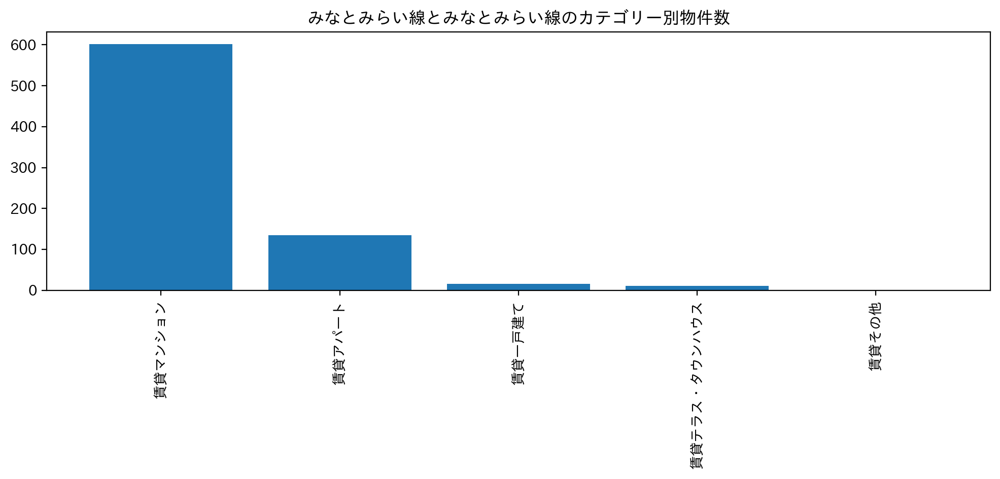
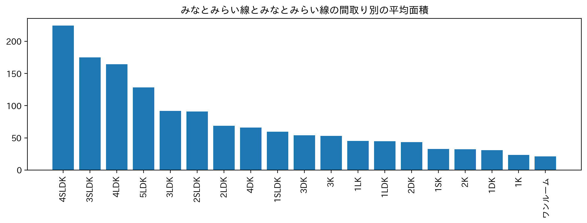
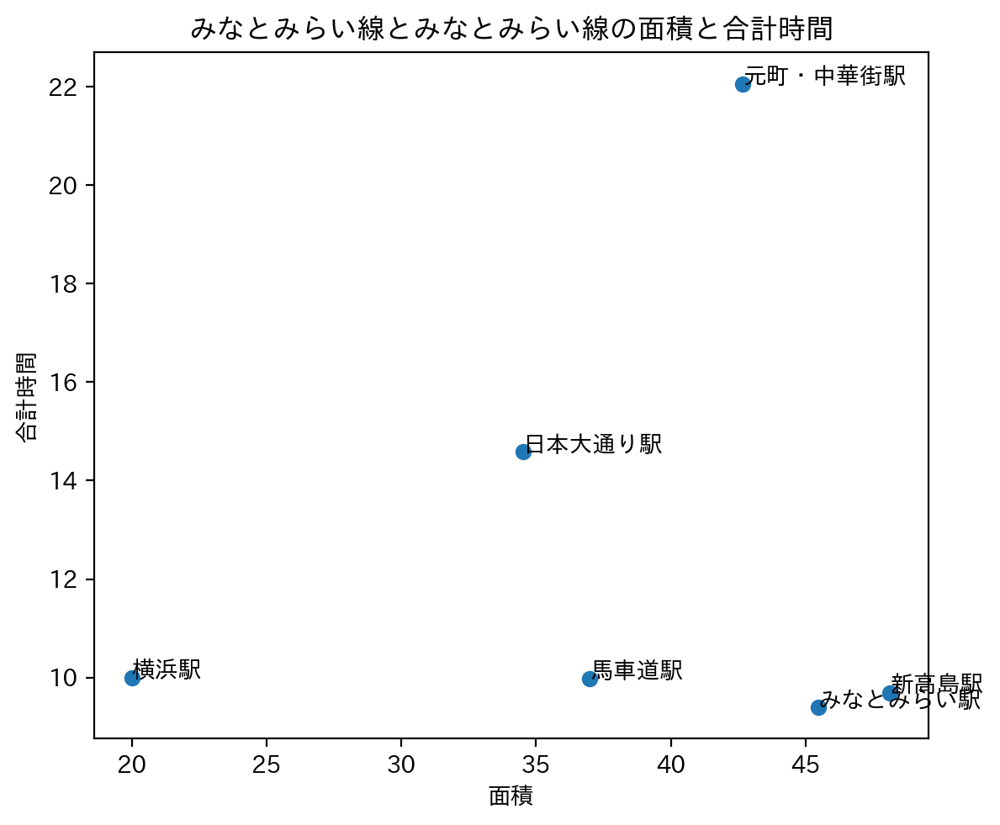
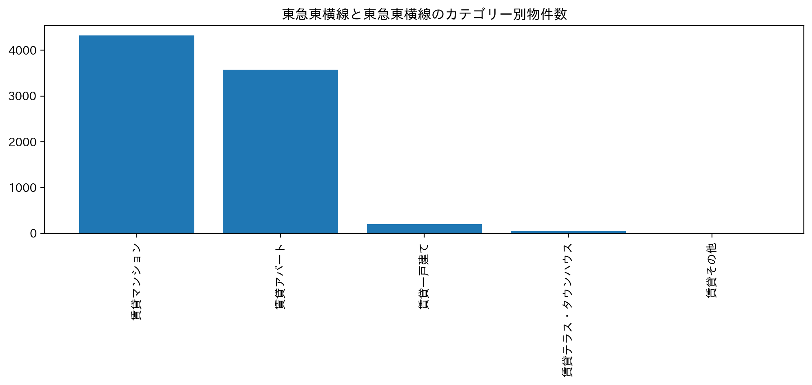
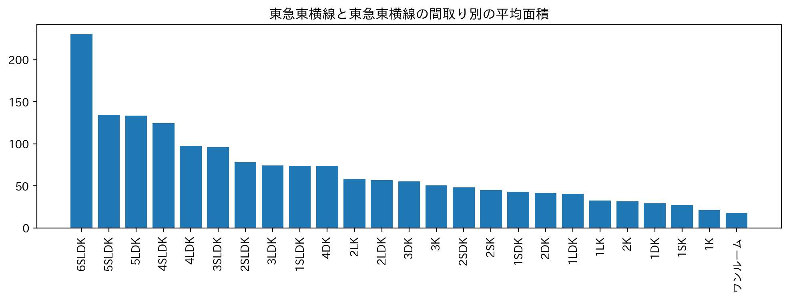
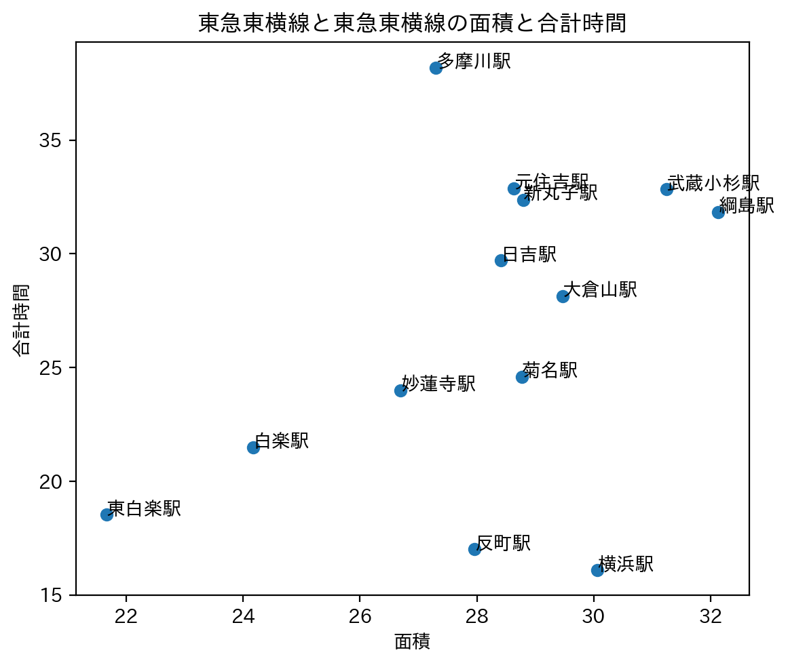

XBP_HPsample

データからわかること
今回私はこのグラフを見て青丸のところが気になりました。
この二つは面積が広くMM まで近いと言う特徴があります。

みなとみらい線と東急東横線で物件数、平均面積、満席とMMまでの合計時間を調べました。
みなとみらい線ではこのような結果になりました。↓↓↓↓↓↓↓↓↓↓↓↓



東急東横線ではこのような結果になりました。↓↓↓↓↓↓↓↓↓↓↓↓



この二つの結果を見てみると東急東横線の方では賃貸アパートがみなとみらい線の方より多くあったり、
MMまで合計時間が少ない駅が東急東横線の方が多かったりと言うことがわかりました。
だから、私の一人暮らしの人の多くは東急東横線沿いに住んでいるのかなと考えました。
次は家賃と比較してみなとみらい線と東急東横線の違いを見ていきたいです。
私の予想は東急東横線の方がみなとみらい線より家賃が安いと予想します。